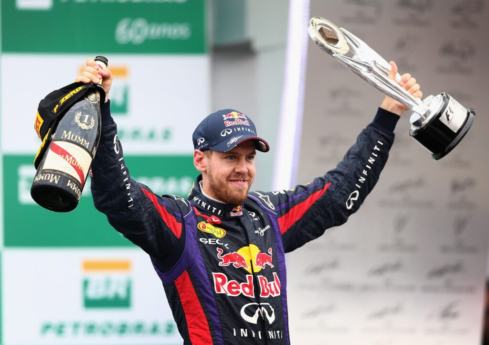
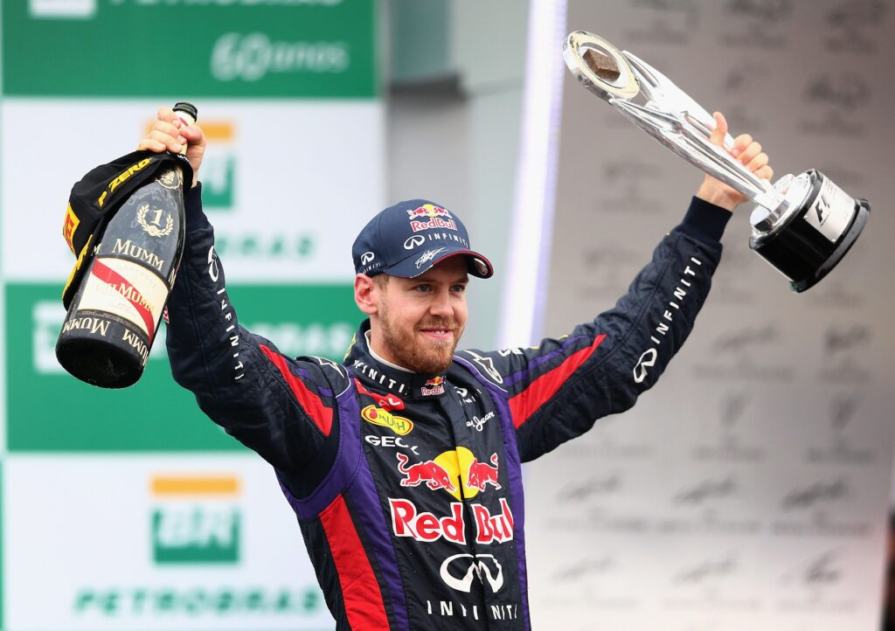

Scuderia Ferrari


Scuderia Ferrari es la división deportiva de Ferrari encargada de las competiciones de Fórmula 1. Es el equipo activo más antiguo del campeonato y el más exitoso en la historia, con 15 campeonatos de pilotos y 16 de constructores.
Red Bull Racing
 



Red Bull Racing es una escudería austriaca de Fórmula 1 que compite desde 2005. Cuenta con múltiples campeonatos de pilotos y constructores, destacándose los títulos obtenidos por Sebastian Vettel y Max Verstappen.
Mercedes-AMG Petronas


Mercedes-AMG Petronas es una de las escuderías más dominantes de la historia reciente de la Fórmula 1. Ganó ocho campeonatos de constructores consecutivos entre 2014 y 2021, con Lewis Hamilton como su principal referente.